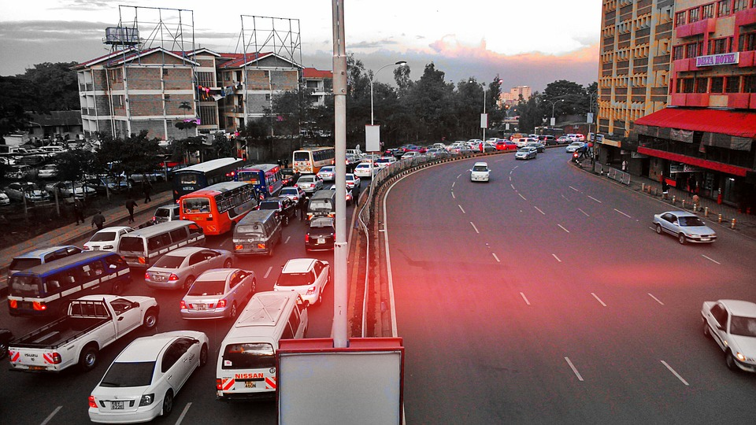
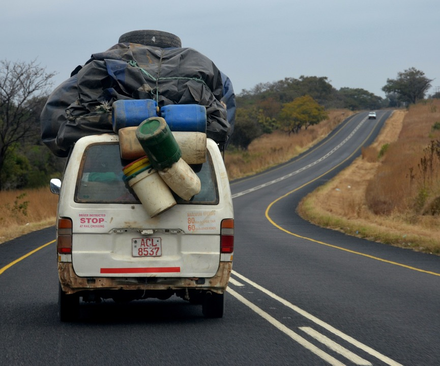
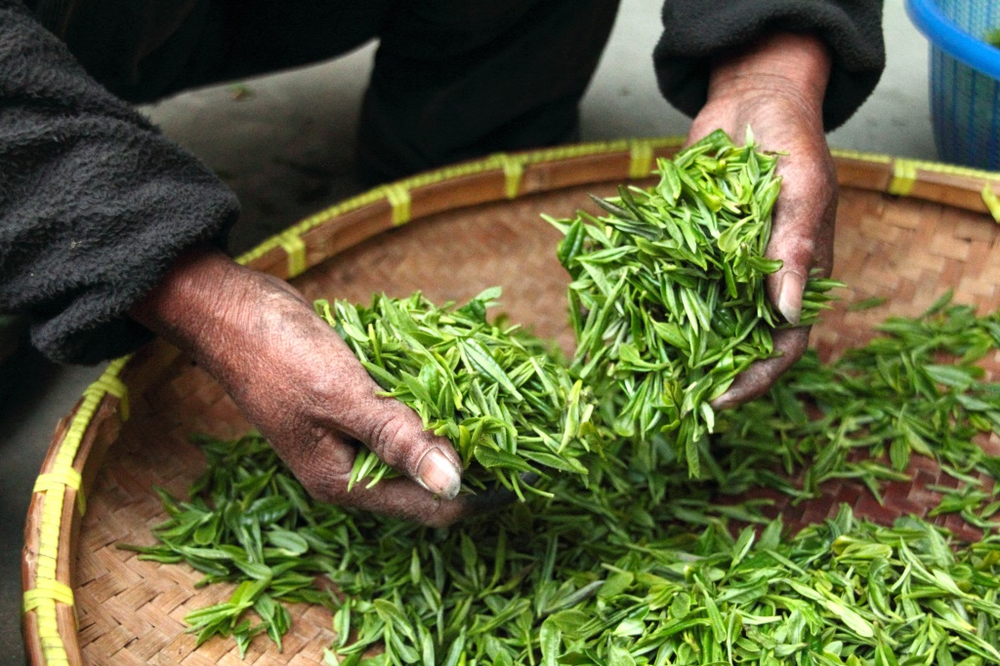
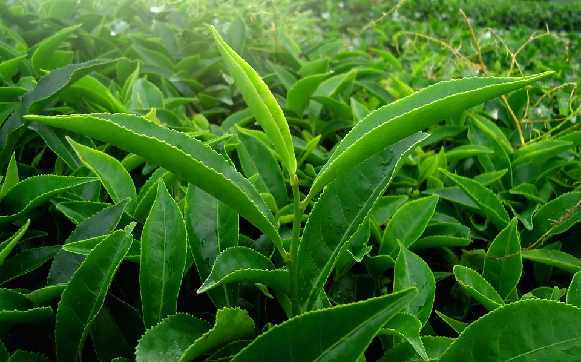

reist um die Welt
Zunächst ist zu erwähnen, dass ich nach Kenia geflogen bin. Mit einem Flugzeug, von Nürnberg über Amsterdam direkt nach Nairobi, die Hauptstadt Kenias. Und die unterscheidet sich so auf den ersten Blick mitten in der Stadt nicht so sehr von anderen Großstäden auf der Welt.
Von Nairobi aus ging es mit einem Bus ins kenianische Hochland, quer durch Kaffee und Teeplantagen. Bis zu einem kleinen Dorf namens Mutunguru. An der Hauptstraße waren noch ein paar Strommasten, von denen aus Kabel in ein paar Häuser gingen. Sonst nicht. Ich habe dann rausgefunden, dass die meisten Häusen davon irgendwelche Läden waren, die den Strom für Kühlschrank oder so brauchten.
Dann wurde ich vom Bus abgeholt und bin zu meiner Gastfamilie gelaufen, durch ein kleines Tal auf die andere Seite von einem kleinen Fluss zu einer Wellblechhütte. Natürlich wer hätte es gedacht, ohne Strom. Im "Wohnzimmer" stand auf dem kleinen Holztisch eine Petroleumlampe, Fenster hatte der Raum keine. Außen rum standen so eine Art Sofa. An dem Tisch kam die ganze Familie zusammen zum Essen und reden.
Zum Frühstück gab es schwarzen Tee mit Milch und "Ara-Root", ich hab bis heute nicht rausgefunden, was das wirklich ist, aber es ist irgendeine Art Rübengemüse, das gekocht gegessen wird und eine weisslich violette Farbe hat.
Wir sind jeden Tag viel gelaufen, war mir mit meinen kurzen Plüschbeinchen natürlich besonders schwer gefallen ist, deswegen habe ich mich ganz oft tragen lassen. Wir haben viele Leute besucht. In einem Haus gab es Strom und einen Fernseher, da waren ganz viele Leute zu Besuch um fern zu schauen. Und weil fast keiner zu Hause Strom hatte, aber trotzdem ganz viele ein Handy hatten, haben die Abends einfach ihr Handy zum Kiosk gebracht und wieder aufladen lassen, gegen eine geringe Gebühr natürlich.
Und natürlich sind wir viel durch die Teefelder gelaufen und haben Tee gepflückt. Immer 2 Blätter und ne Spitze. Das wird dann am Abend gewogen und in die Teefabrik gebracht. Meistens pflücken die Frauen, aber natürlich auch die Männer und die Kinder nach der Schule.
Gekocht wird übrigens in einer extra Hütte, auf einer kleinen Feuerstelle, die aus 3 Steinen und einem Bündel brennender Zweige besteht. Da es in der Hütte keinen Kamin gibt, ist kochen eine sehr rauchige Angelegenheit.
So jetzt aber genug geredet, wenn ihr euch für Afrika interessiert fahrt doch einfach selber mal hin.